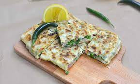

One of our favorite cuisine to eat is middle eastern cuisine. I love the shawarma, there is a unique dish from the middle east that me and my kids love and its easy to make at home too. it's Muttabaq it is a mixture of groud beef, eggs, and spring onions all wrapped in a thin layer of dough, makes for an awesome breakfast.
Next runner up is close to home, Indian cuisine. Although, we eat indian food almost everyday. When me and my family go out to eat we love to eat Hyderabadi mutton biryani. With the biryani there are so many variations of it, there is biryani for just about everthing there is prawns biryani, fish biryani, paneer(a sort of indian cottege cheese) biryani. While it does take some to cook and it does have numerous steps to the final product, but it is definitely worth it. If you are attemping to make it at home always remember "less is more".

Last but most definitely not the least, would have to be chinese cuisine. I personally love sushi, I love smoked salmon sushi. My family on the other hand do not approve of it. If there is something we love as a family it would have to be orange chicken. Similar to indian cusine if you decide to make it home, it is a bit cumbersome, but none the less worth it all the way.